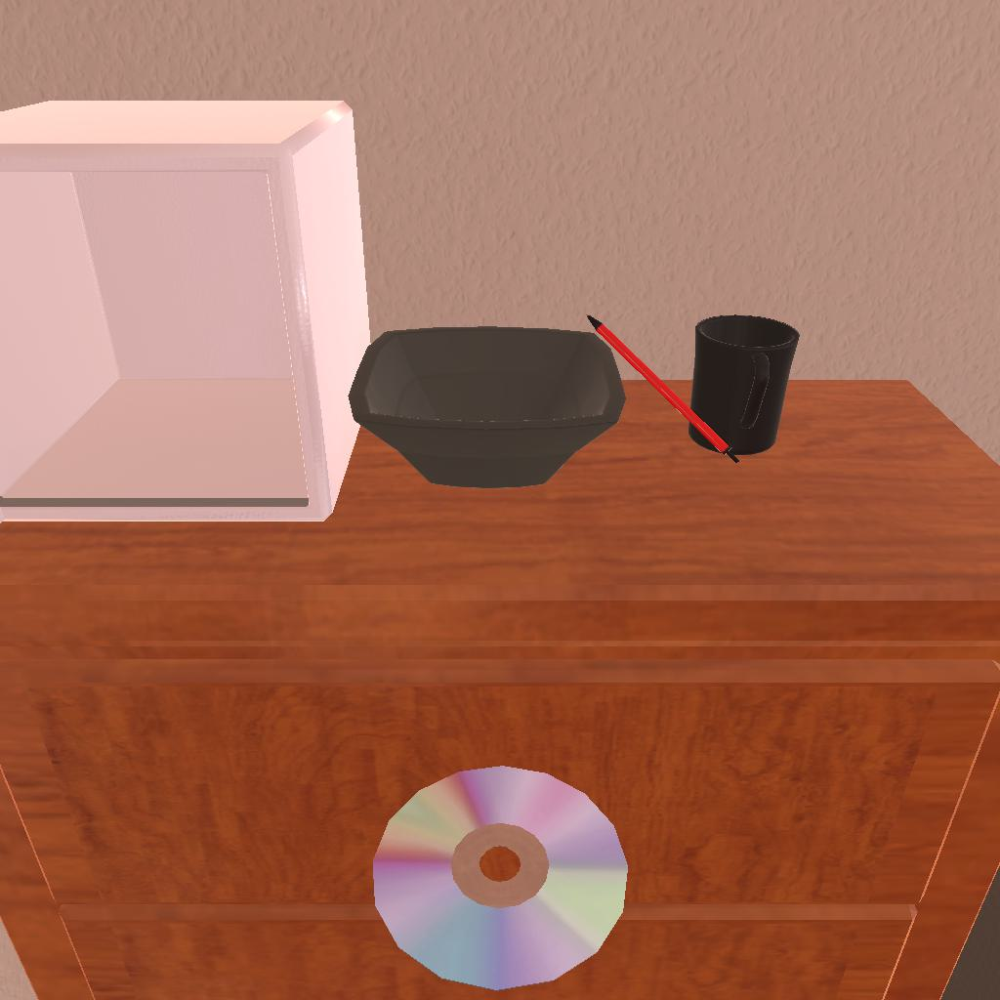
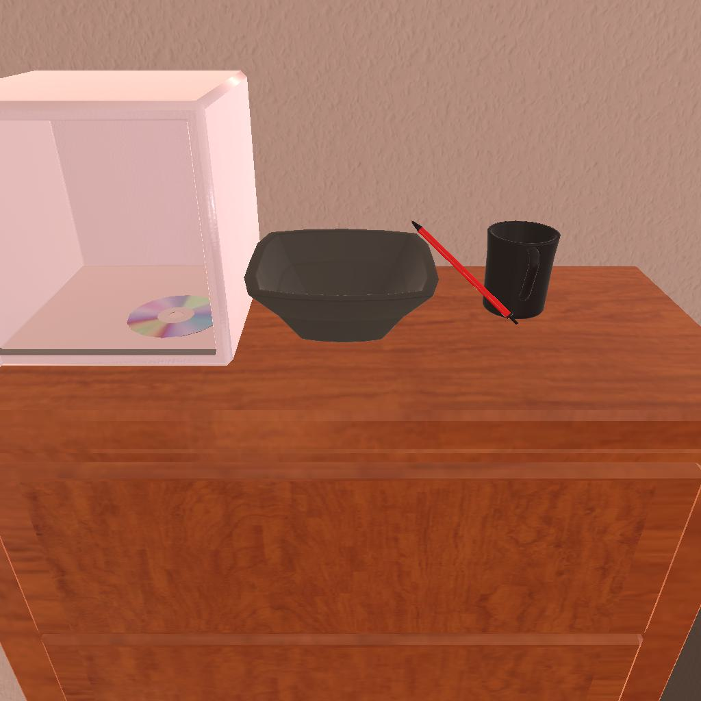

---------------------------------------------------------task: 6---------------------------------------------------------
--------------------------------------------------------------------------------------------------------------------------------------------------------------------
--------------------------------------------------------------------------------------------------------------------------------------------------------------------
Step:--------------------------------------------------------------------------16-------------------------------------------------------------------------------
----------------------------------------
VLM Prompt:
Image1:
Image2:
**Instruction**
1. Analyze the provided images to identify all visible household objects and compare the difference between images (e.h. whether the object is opened or not and taken on hand or not), focusing on those relevant to the task description "put some cd on safe."
2. Use the analysis of images and the task hint "The agent must find an object of the desired type, pick it up, find the correct location to place it, and put it down there." to answer the question: what is the most reasonable action in the choices for the task description "put some cd on safe"?
3. Decide and write the answer using the template: The answer is: (i): , where i is the real number. If there is no desired object in images, search every place based on **Initial Observation** to find the object. And if no one is exactly correct, choose a similar answer.
**Initial Observation**
You are in the middle of a room. Looking quickly around you, you can see bed (1-2), dresser (1), sidetable (1-2), drawer (1-11), desk (1), garbagecan (1), safe (1)
**Answer Choices**
(1): go to bed 1
(2): go to dresser 1
(3): go to bed 2
(4): go to sidetable 1
(5): go to drawer 1
(6): go to drawer 2
(7): go to sidetable 2
(8): go to drawer 3
(9): go to drawer 4
(10): go to desk 1
(11): go to garbagecan 1
(12): go to drawer 5
(13): go to drawer 6
(14): go to drawer 7
(15): go to drawer 8
(16): go to drawer 9
(17): go to drawer 10
(18): go to drawer 11
(19): close safe 1
(20): put cd 1 in/on safe 1
(21): examine safe 1
**Answer**
Let's think step by step by following the instructions.
----------------------------------------
----------------------------------------
Original Response:
Image Analysis:
In both images, we can see a safe, a black bowl, a red pen, and a black cup on top of a wooden dresser. There is also a CD visible on the lower part of the dresser. The safe appears to be empty and open in both images. There is no change in the state of the objects between the two images.
Task Description Analysis:
The task "put some cd on safe" requires the agent to find a CD, pick it up, and place it on the safe.
Initial Observation Analysis:
Based on the initial observation, the agent has noticed a safe and a CD in the same vicinity.
Action Decision:
Given that the CD is already visible in the images, and it is on the dresser, the most reasonable action to complete the task is to pick up the CD from the dresser and place it on the safe. The CD needs to be put "in/on" the safe, and since the CD is already near the safe, no action related to going to other furniture is required. The correct action is to pick up the CD and place it on the safe.
The answer is: (20): put cd 1 in/on safe 1.
----------------------------------------
----------------------------------------
>>> Refine Original VLM Response and Get Pure Action: put cd 1 in/on safe 1
----------------------------------------
-----------------------------------------------------------------
Running time: 11.12846064567566 seconds
Total Money: 2.5374500000000006
-----------------------------------------------------------------
-----------------------------------------------------------------
Text Observation:You put the cd 1 in/on the safe 1.
-----------------------------------------------------------------
SUCCEED